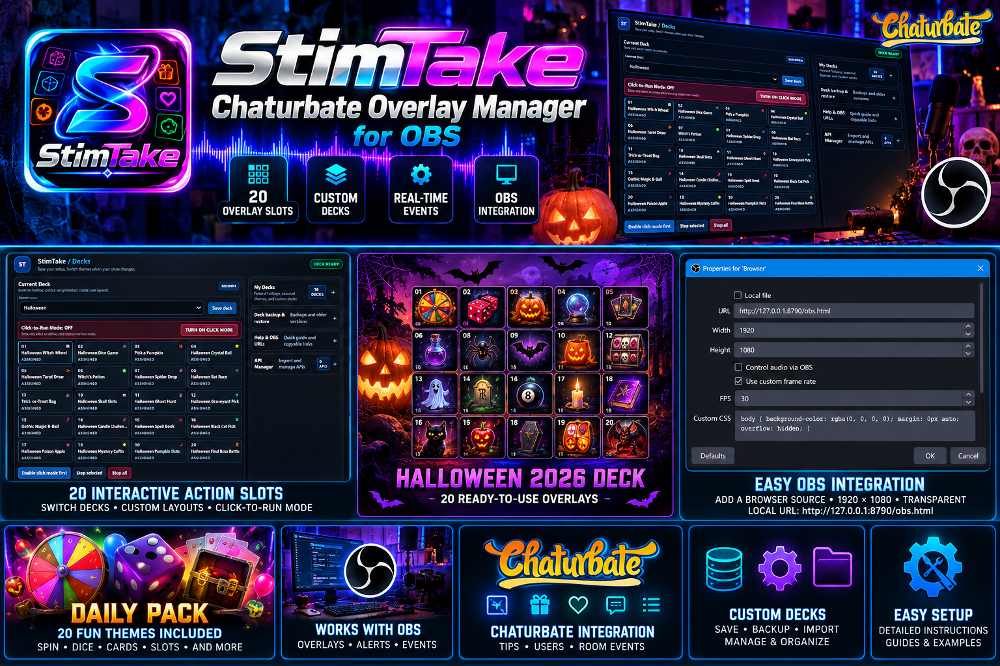
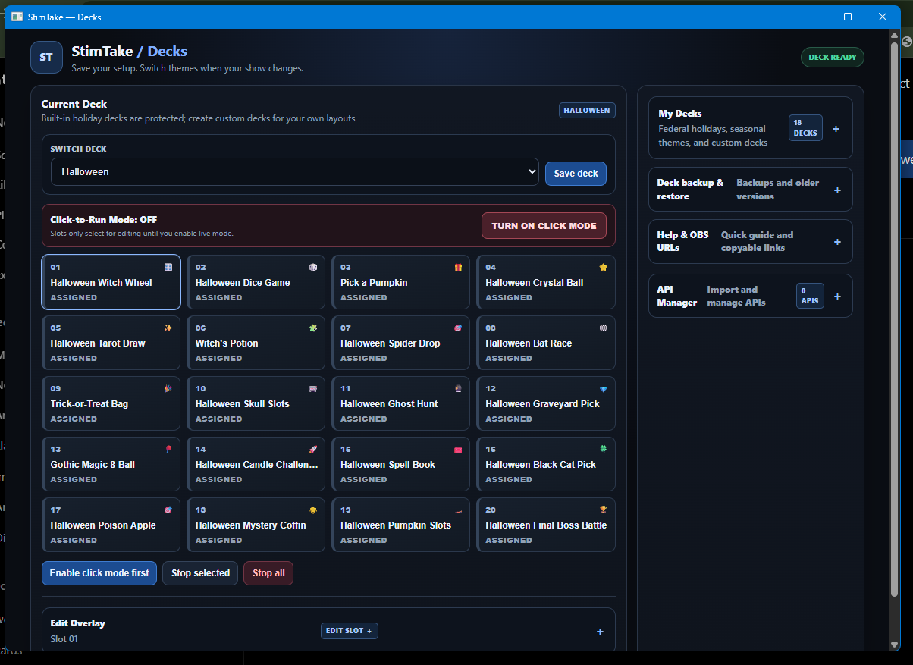
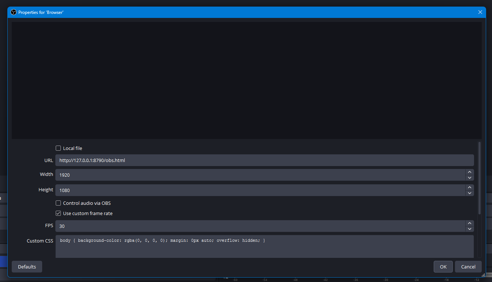
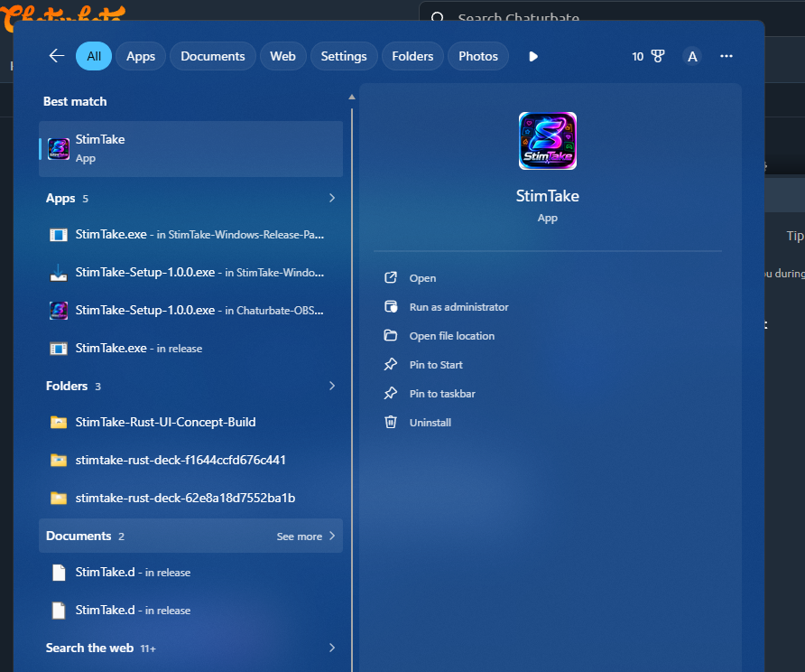
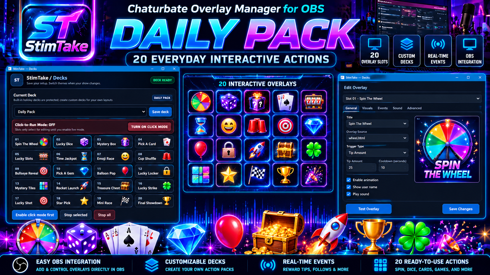

▦
20 action slots
Enable or disable actions, configure token ranges, add optional message matching, and test individual slots.
StimTake is a Chaturbate overlay manager for OBS with 20 action slots, switchable decks, themed HTML overlays, and one persistent Browser Source for your scene.

Organize your actions, configure trigger ranges, and test overlays before using them live.
Enable or disable actions, configure token ranges, add optional message matching, and test individual slots.
Choose a themed pack, save custom decks, and keep your show setup organized.
The documented overlay page queues actions so they play one at a time, with stop and clear-queue controls.
Use one persistent local overlay page rather than adding a separate Browser Source for every action.
The project is designed to run locally on Windows with a local dashboard and bridge.
Use the included build/test helpers and verify your room connection and overlay rendering before going live.
These images are from the supplied Windows and OBS screenshots, paired with the promotional artwork.

The Decks interface shows the current deck, click-to-run mode, action assignments, and deck backup/restore tools. Select the actions and settings that fit your show.

Your supplied OBS properties screenshot shows a transparent Browser Source configured at 1920 × 1080. Use the exact local URL configured for your installed version.
http://127.0.0.1:8790/obs.html. The repository README describes a bridge using port 8788 and index.html. These may be different app versions or configurations—verify the active URL in your running dashboard.
The Windows screenshot shows StimTake alongside its build outputs. Follow the repository's current README and build scripts for the version you're installing.
Click any screenshot to enlarge it.
Use the included themes as a starting point, then customize your setup.
Spooky wheels, dice, pumpkins, potions, ghosts, slots, and other themed actions. The repository README describes Halloween as the preselected deck in its documented build.

A second set of 20 themed actions for everyday shows, including spin, dice, cards, and other playful interactions.
Check the repository README for the authoritative instructions for your current build.
On Windows, follow the current repository instructions and run the provided build/test helper.
Launch StimTake and open its local dashboard. Keep the local service running while using the overlay.
Choose a deck, review the slot settings, set your model/room as required, and test each action.
Add one Browser Source using the URL shown by your running version and confirm the overlay renders.
Check the latest README, build helpers, and project status on GitHub.